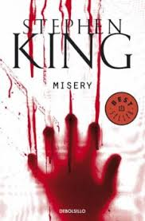
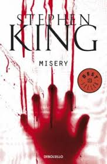

Leer para Sentir, Viajar y Aprender
La lectura ha sido una de mis pasiones más constantes. A lo largo de los años he leído más de 100 libros de géneros distintos, desde terror y fantasía hasta novelas históricas y literatura contemporánea. Cada historia me ha dejado una huella distinta, pero algunas han marcado un antes y un después en mi forma de ver el mundo como "It","La biblia de los caidos”, El año del verano que nunca llego”,” La niña alemana". Para mi leer no es solo un pasatiempo, es una forma de viajar, de aprender y de conectar con emociones profundas.


 
